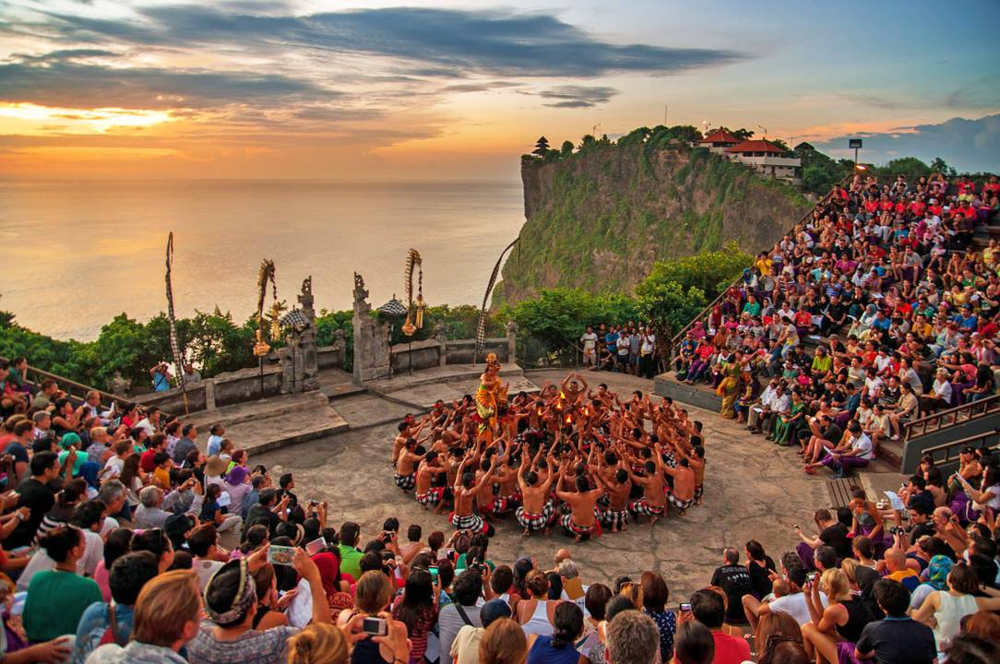
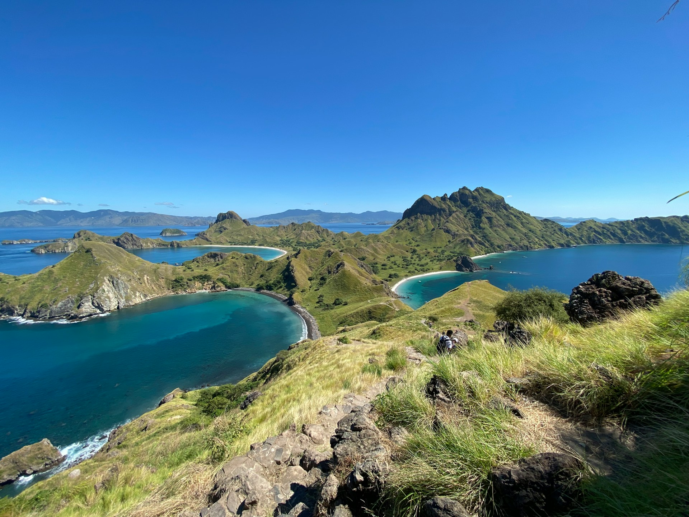

Tari Kecak di Uluwatu Bali
Tari Kecak adalah salah satu pertunjukan tradisional Bali yang paling ikonik.
Pertunjukan ini berlangsung di atas tebing Uluwatu, biasanya menjelang matahari terbenam.
Tari ini menggambarkan kisah Ramayana dan diiringi oleh suara "cak cak cak" dari puluhan pria yang duduk melingkar..
Baca Selengkapnya

Banda Neira, Maluku
Banda Neira tidak hanya memikat dengan sejarahnya, melainkan juga dengan keindahan alam bawah lautnya.
Baca Selengkapnya

Labuan Bajo: Salah satu surga terindah di Pulau Timur Indonesi
Salah satu wisata paling terkenal di Indonesia.Terkenal sebagai gerbang menuju Taman Nasional Komodo,
tempat ini menawarkan pemandangan alam luar biasa serta petualangan tak terlupakan.
Baca Selengkapnya